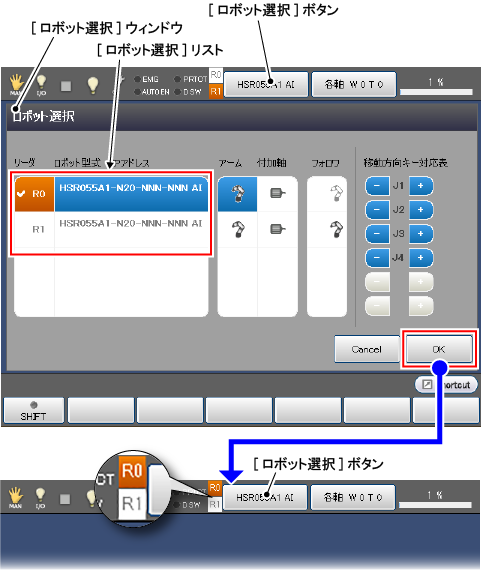
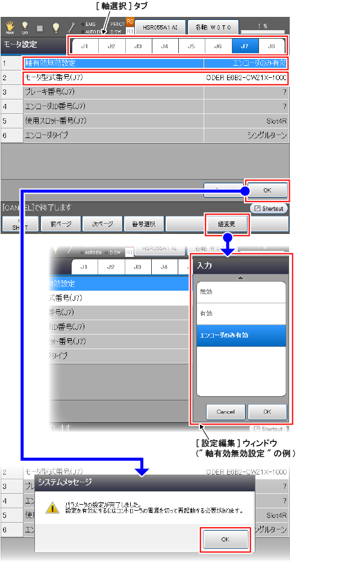
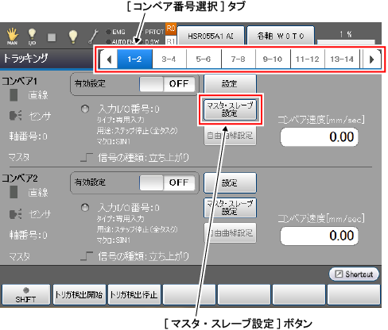
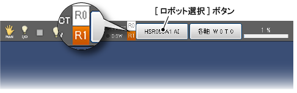
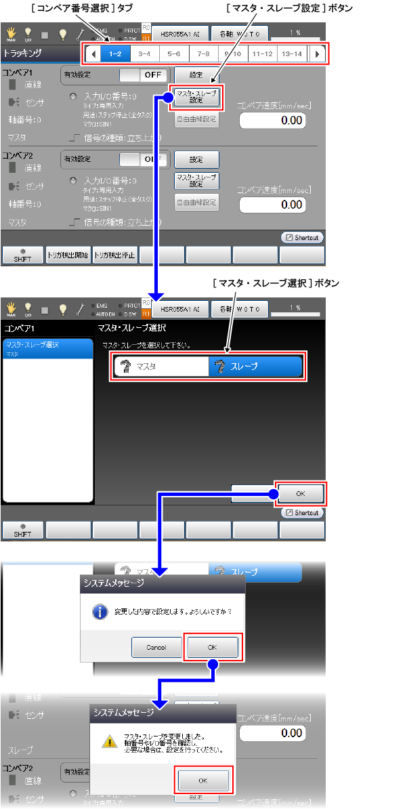

ID : 3404
ロボット2台、コンベアN台 (コンベア共有)のセットアップ手順
共有するコンベアの設定をマスタとスレーブでそれぞれ行います。
ここでは、セットアップするシステムの条件を下記のように決めた場合を例にして説明します。
- Robot0をマスタにする
- Robot1をスレーブにする
- エンコーダは、エンコーダハブの7軸に接続する
- コンベア番号は1を使用する
実際にセットアップする際は、セットアップするシステムの条件にあわせて、各設定を行ってください。
全体的なセットアップの手順を下記に示します。
| 実施項目 | 概要 |
|---|---|
| 1. マスタの設定 |
|
| 2. スレーブの設定 |
|
コンベアの台数によっては、ロボットコントローラのCPU性能により十分な性能が出ない可能性があります。その場合には、コンベアの台数を減らし、システムを分離してロボットコントローラのCPU負荷の低減を検討してください。もしくは、ハイスペックCPUを搭載したロボットコントローラを使用することを検討してください。
1. マスタの設定
1
まずは、ティーチングペンダントの設定対象をRobot0に切替えます。
[ロボット選択]ボタンを押すと、[ロボット選択]ウィンドウが表示されます。[ロボット選択]リストから、Robot0(R0)を選択し、[OK]ボタンを押します。

[ロボット選択]ボタンの左にあるアイコンの"R0"が、オレンジ色にマーキングされたことを確認してください(上図参照)。
2
エンコーダが接続されている軸の設定を行います。
ユーザレベルを「メンテナ」にして、次の操作経路で操作すると、下図の[モータ設定]ウィンドウが表示されます。
操作経路 : [F2 アーム] - [F12 保守] - [F10 軸設定] - [F6 モータ設定] |

[軸選択]タブから軸番号(7軸の場合は"J7")を選択します。7軸のモータ設定パラメータが表示されますので、下記表の内容に沿って設定します。
|
設定パラメータ (番号 : パラメータ名) |
設定値 |
|---|---|
| 1 : 軸有効無効設定 | エンコーダのみ有効 |
| 2 : モータ型式番号(J7) | ENCODER E6B2-CWZ1X-1000 |
設定の方法は、まず、各パラメータにカーソルを合わせ、[F5 値変更]を押します。[設定編集]ウィンドウが表示されるので、そこで設定したい値を選択し[OK]ボタンを押します。
各パラメータを設定後、[モータ設定]ウィンドウの[OK]ボタンを押します。パラメータ設定完了のシステムメッセージが表示されますので、[OK]ボタンを押します。
ロボットコントローラの電源を切る前に、Robot1の7軸の"軸有効無効設定"が"無効"になっていることを確認してください。確認方法は、まず、[ロボット選択]ボタンを押して、ティーチングペンダントの設定対象を"Robot1"に切替えます。その後、上記を参照して、[モータ設定]ウィンドウを表示し、7軸のモータ設定を確認します。
3
ロボットコントローラを再起動します。
ロボットコントローラの電源を切り、その後、電源を入れてください。
ロボットコントローラが立ち上ったら、ティーチングペンダントの設定対象をRobot0に切替えます。
4
Robot0をマスタに設定します。
ユーザレベルを「メンテナ」にして、次の操作経路で操作すると、下図の[トラッキング]ウィンドウが表示されます。
操作経路 : [F10 トラッキング] |

[コンベア番号選択]タブから、コンベア番号1と2のタブ("1-2")を選択すると、コンベア番号1と2のコンベア設定画面が表示されます。その後、コンベア番号1の[マスタ·スレーブ設定]ボタンを押して、下図の[マスタ·スレーブ選択]ウィンドウを表示させます。

ここでは、下記表の内容に沿って設定します。
| 設定項目 | 設定値 / 設定方法 |
|---|---|
| マスタ·スレーブ選択 |
設定値 : マスタ |
|
設定方法 : [マスタ·スレーブ選択]ボタンの"マスタ"を押す("マスタ"が青色でマーキングされる)。 |
|
| スレーブ数 |
設定値 : 1 |
|
設定方法 : [スレーブ数設定]ボタンを押し、[設定編集]ウィンドウから"1"を選択後、[設定編集]ウィンドウの[OK]ボタンを押す。 |
|
| スレーブIPアドレス |
設定値 : 0.0.0.0 (0.0.0.0を指定すると、スレーブに設定するロボットを指定したことになります。この例では、Robot1を指定したことになります。) |
|
設定方法 : [スレーブIPアドレス設定]ボタンを押し、[設定編集]ウィンドウで"0.0.0.0"を入力後、[設定編集]ウィンドウの[OK]ボタンを押す。 |
各設定項目を設定後、[マスタ·スレーブ選択]ウィンドウの[OK]ボタンを押します。システムメッセージが表示されるので[OK]ボタンを押すと、[トラッキング]ウィンドウに戻ります。
スレーブに設定されていたコンベアに対して、マスタに変更した場合、[マスタ·スレーブ選択]ウィンドウの[OK]ボタンを押すと、システムメッセージが2回でます。2回とも[OK]ボタンを押すと、[トラッキング]ウィンドウに戻ります。
5
コンベアに使用するハードウェアの設定と接続確認および、コンベアとロボット(Robot0)とのキャリブレーションを行い、その後、カメラキャリブレーションを実施します。
手順は、ロボット1台のみ使用する場合と同じです。"ハードウェアの選択"、"ハードウェアの接続確認"、"キャリブレーション"、"カメラキャリブレーション実施手順"を参照ください。ただし、ティーチングペンダントの設定対象は、Robot0のまま実施してください。
6
コンベアを複数台使用する場合は、STEP1からSTEP5の作業をコンベアの台数分実施してください。
2. スレーブの設定
1
まずは、ティーチングペンダントの設定対象をRobot1に切替えます。
[ロボット選択]ボタンを押して切替えてください ("1. マスタの設定"の"STEP1"を参考にしてください)。
[ロボット選択]ボタンの左にあるアイコンの"R1"が、オレンジ色にマーキングされたことを確認してください(下図参照)。

2
Robot1をスレーブに設定します。
ユーザレベルを「メンテナ」にして、次の操作経路で操作すると、下図の[トラッキング]ウィンドウが表示されます。
操作経路 : [F10 トラッキング] |

[コンベア番号選択]タブから、コンベア番号1と2のタブ("1-2")を選択し、コンベア番号1の[マスタ·スレーブ設定]ボタンを押します。
[マスタ·スレーブ選択]ウィンドウが表示されるので、[マスタ·スレーブ選択]ボタンの"スレーブ"を押します("スレーブ"が青色でマーキングされる)。
その後、[マスタ·スレーブ選択]ウィンドウの[OK]ボタンを押すと、システムメッセージが表示されるので、[OK]ボタンを押します。さらに、システムメッセージが表示されるので[OK]ボタンを押すと、[トラッキング]ウィンドウに戻ります。
3
マスタとの接続確認を行います。
[トラッキング]ウィンドウ内にある、コンベア番号1の[設定]ボタンを押します。

[マスタとの接続確認]ウィンドウが表示されます。
このウィンドウでは、下表の内容を実施します。
| 実施項目 / 実施手順 | 実施内容 |
|---|---|
| 1. マスタIPアドレスの設定 |
設定値 : 0.0.0.0 (0.0.0.0を指定すると、マスタに設定したロボットを指定したことになります。この例では、Robot0を指定したことになります。) |
|
設定方法 : [マスタIPアドレス設定]ボタンを押し、[設定編集]ウィンドウで"0.0.0.0"を入力後、[設定編集]ウィンドウの[OK]ボタンを押す。 |
|
| 2. マスタとの接続確認 |
[接続確認]ボタンを押し、エンコーダが接続されていることを示すシステムメッセージが表示されることを確認します。システムメッセージの[OK]ボタンを押すと、[マスタとの接続確認]ウィンドウに戻ります。 |
| 3. エンコーダ値の取得の確認 |
設定対象のコンベアを動作させます(この例ではコンベア番号1のコンベア)。トリガ信号が入力されるたびに、[データバッファ表示]欄の一番左の枠から順に、エンコーダ値が表示されます。 [データバッファ表示]欄の各枠に表示されたエンコーダ値がそれぞれ異なる値であれば正常です。 さらに、[現在のエンコーダ値]欄のエンコーダ値がリアルタイムに更新されていることを確認します。 |
上記表の内容を全て実施したら、[次へ]ボタンを押します。[コンベア形状選択]ウィンドウが表示されます。
4
[コンベア形状選択]ウィンドウからは、コンベアに使用するハードウェアの設定(コンベア·デバイスの選択)および、コンベアとロボット(Robot1)とのキャリブレーションとなります。
手順は、ロボット1台のみ使用する場合と同じです。"コンベア·デバイスの選択"、"キャリブレーション"を参照ください。ただし、ティーチングペンダントの設定対象は、Robot1のまま実施してください。
スレーブでは、下記内容は不要であるため実施しません。
- エンコーダの軸番号の設定
- I/O設定
- ハードウェアの接続確認
5
コンベアを複数台使用する場合は、STEP1からSTEP4の作業をコンベアの台数分実施してください。
ID : 3404